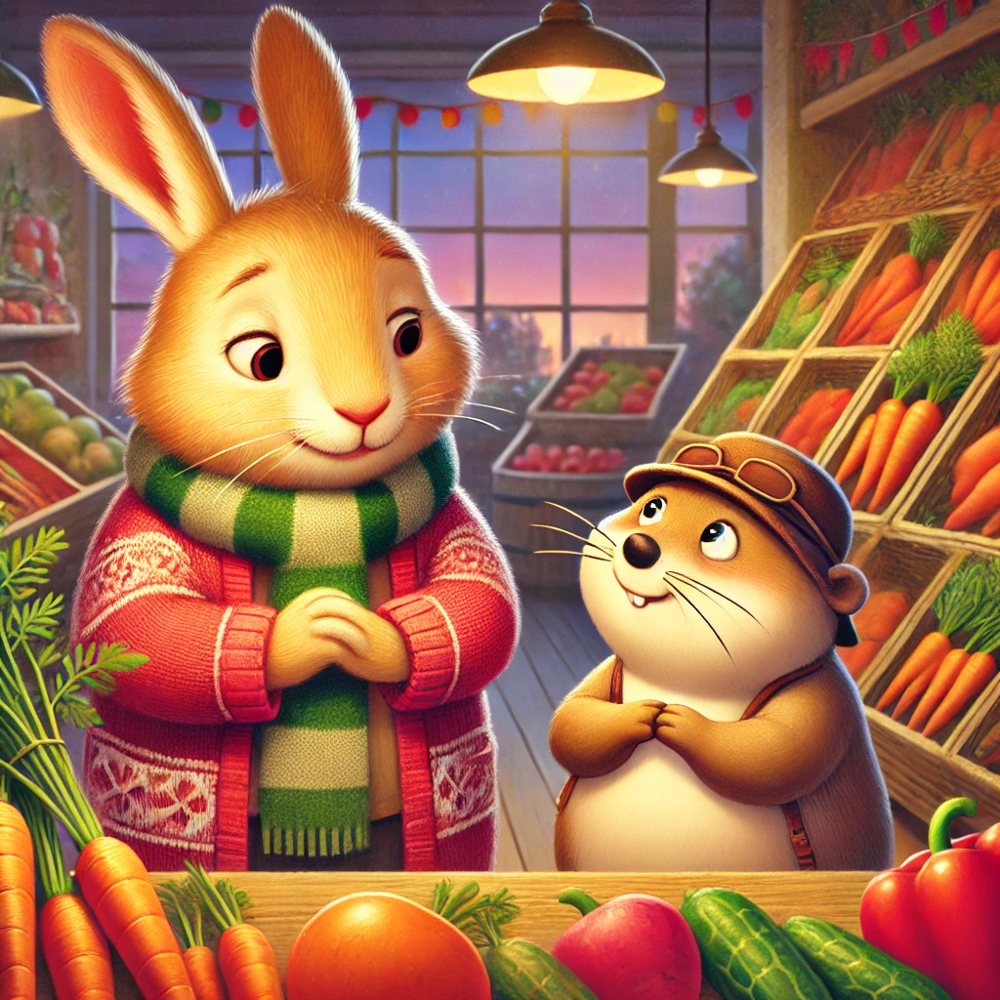
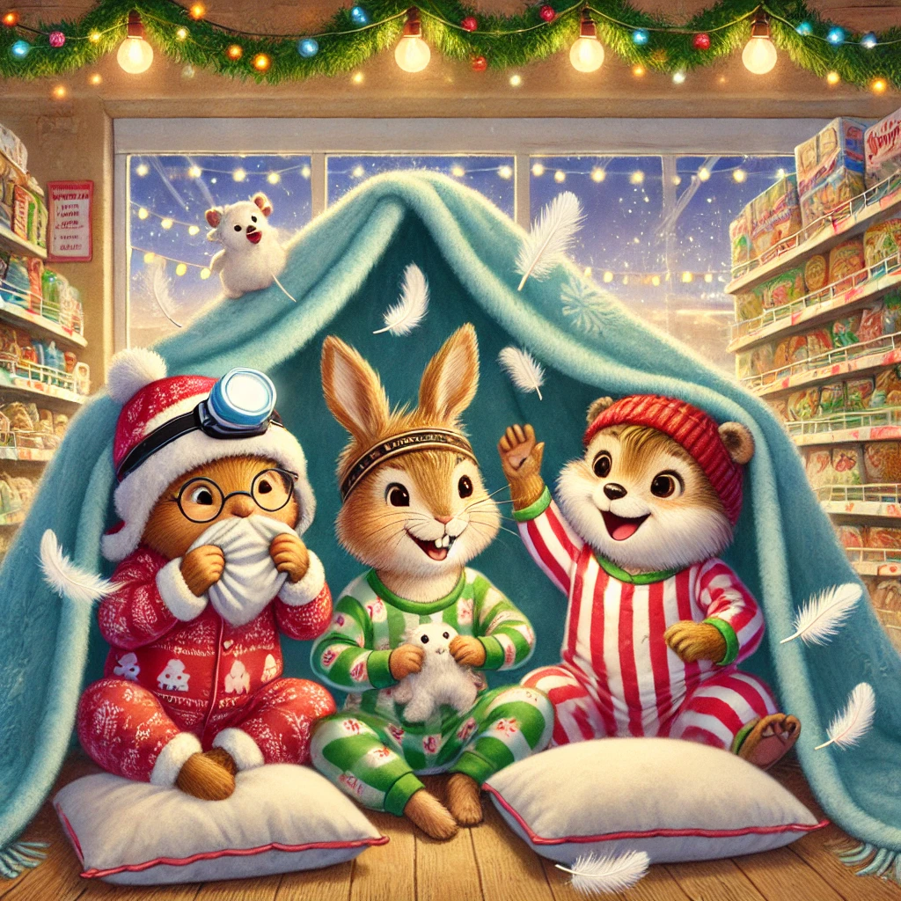
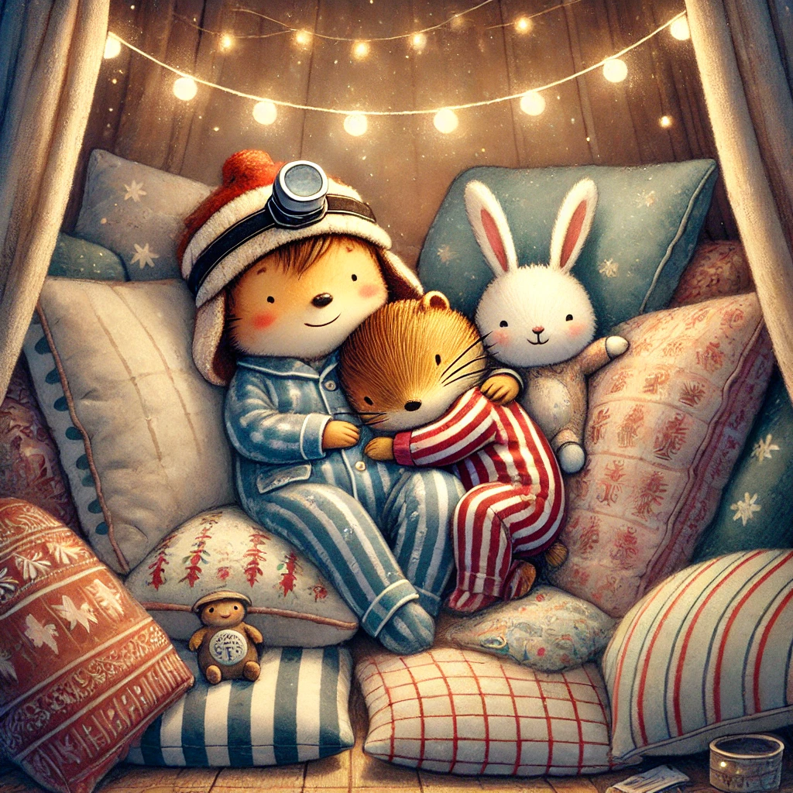

Es war einmal ein Wiesel namens Winnie, das oben auf dem Knabbereienregal eines Supermarkts in Leknes auf den Lofoten wohnte. Eines Tages traf Winnie Herrn Hase in der Gemüseabteilung. Natürlich war Winnie nicht wirklich am Gemüse interessiert, sondern war lediglich auf der Durchreise zu den Gefriertruhen mit der Eiscreme. Herr Hase hing schlapp über der Karottenkiste.
"Du siehst aber ein wenig schlapp aus, Herr Hase. Geht es dir gut." Winnie legte ihm besorgt eine Hand auf die Schulter. "Ich habe kaum geschlafen. Alpträume halten mich wach. Ich habe solche Angst vor dem Einschlafen." Winnie runzelte traurig die Stirn. Das hörte sie gar nicht gerne.
"Wie wäre es", dachte sie laut nach, "wenn wir eine Übernachtungsparty organisieren? Du, ich und Biep. Wir machen es uns gemütlich mit Snacks und einem Film und kuscheln bis du keine Angst mehr hast!" Herr Hases Gesicht hellte sich auf. "Du meinst, ich muss heute Abend nicht alleine schlafen? Und dann noch mit so viel Spaß? Winnie, danke. Du bist die beste!" Und er viel ihr um den Hals.
Natürlich mussten sie den Plan gleich Biep erzählen. Der hatte auch eine prima Idee beizutragen: "Ich bin gestern an der Textilabteilung vorbeigekommen. Da gibt es herrlich flauschige Decken und Kissen." Den ganzen Nachmittag sammelten die Freude Kuschelschloss Material. Kissen, Decken, Lichterketten, Wärmflaschen, Schlafanzüge - natürlich mit Weihnachtsmotiven - und einen endlosen Vorrat an Chips, Keksen, Marshmallows und Punsch.
Als es dämmerte machten es sich die drei im flauschigen Lager gemütlich und läuteten den Abend mit einer Kissenschlacht ein. Danach schauten sie gemeinsam einen Weihnachtsfilm und erzählten sich ihre besten Weihnachtserlebnisse. Ohne es zu merken, fielen die drei aneinander gekuschelt in einen tiefen, traumlosen und erholsamen Schlaf.
